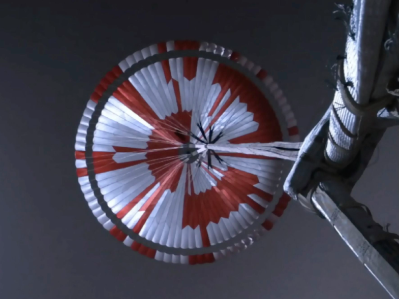
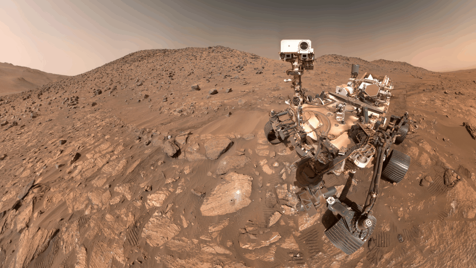
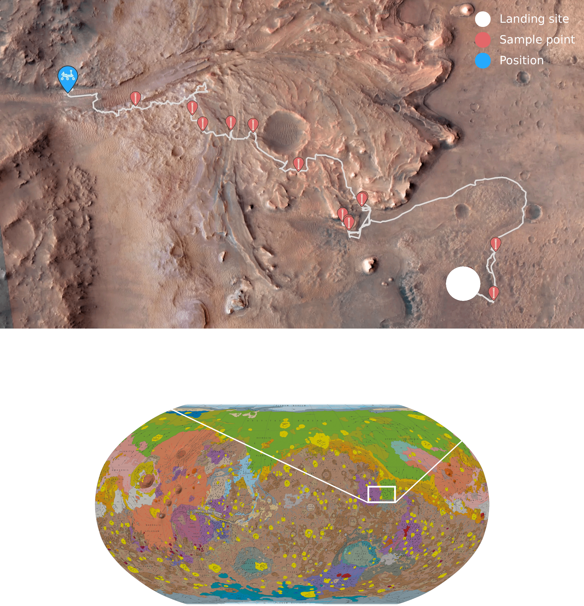

Mars 2020: Mission to Jezero Crater
PERSEVERANCE ROVER
The Mars 2020 Perseverance Rover is searching for signs of ancient microbial life, to advance NASA’s quest to explore the past habitability of Mars. The Rover is collecting core samples of Martian rock and regolith (broken rock and soil), for potential pickup by a future mission that would bring them to Earth for detailed study.
Type
Rover
Target
Jezero
Crater, Mars
Launch
/
Landing
July 30, 2020 / Feb. 18, 2021
Objective
Seek
signs of ancient life and collect samples for possible Earth return
“Tango Delta.
Touchdown confirmed!”
Feb. 18, 2021: Watch and hear views and commentary from mission control at NASA’s Jet Propulsion Laboratory, as the Mars 2020 Perseverance mission lands on Mars. Video includes actual footage from cameras on the spacecraft’s entry, descent, and landing suite as it approached the Martian surface.


Perseverance Discovered Potential Biosignature
In the summer of 2024, Perseverance investigated its “most puzzling, complex, and potentially important rock yet” according to one mission scientist. It showed signs of past water, organic material, and clues suggesting chemical reactions by microbial life. In September 2025, after a rigorous, yearlong peer-review to scrutinize the Mars 2020 team findings, the journal Nature published the validated results: Perseverance’s “Sapphire Canyon” sample from the rock nicknamed “Cheyava Falls” contains potential biosignatures, clues that suggest past life may have been present, but that require more data or further study before any conclusions about the absence or presence of life.

Landing Site: Jezero Crater
NASA chose Jezero Crater as the landing site for the Perseverance Rover. Scientists believe the
area was once flooded with water and was home to an ancient river delta. The process of landing
site selection involved a combination of mission team members and scientists from around the
world, who carefully examined more than 60 candidate locations on the Red Planet. After the
exhaustive five-year study of potential sites, each with its own unique characteristics and
appeal, Jezero rose to the top.
Jezero Crater tells a story of the on-again, off-again nature of the wet past of Mars. More than
3.5 billion years ago, river channels spilled over the crater wall and created a lake.
Scientists see evidence that water carried clay minerals from the surrounding area into the
crater lake. Conceivably, microbial life could have lived in Jezero during one or more of these
wet times. If so, signs of their remains might be found in lakebed or shoreline sediments.
Scientists will study how the region formed and evolved, seek signs of past life, and collect
samples of Mars rock and soil that might preserve these signs.
Jezero Crater is 28 miles (45 kilometers) wide, and is located on the western edge of a flat
plain called Isidis Planitia, which lies just north of the Martian equator. The landing site is
about 2,300 miles (3,700 kilometers) from the Curiosity Rover landing site in Gale Crater.

Mars
Perseverance
Raw
Images
Check out the latest raw images taken from the Perseverance Rover. Since landing in February 2021, Perseverance has sent back an astonishing volume of data, including over 685,000 raw images (and counting). These photos aren't just pretty pictures; they are the primary tool for scientists to navigate the treacherous Martian terrain and identify geological targets for the mission’s main goal: finding signs of ancient microbial life.
Explore the Rover
Discover the advanced technology, hidden curiosities and precision instruments that empower Perseverance to navigate Mars.
OPEN VIEWER